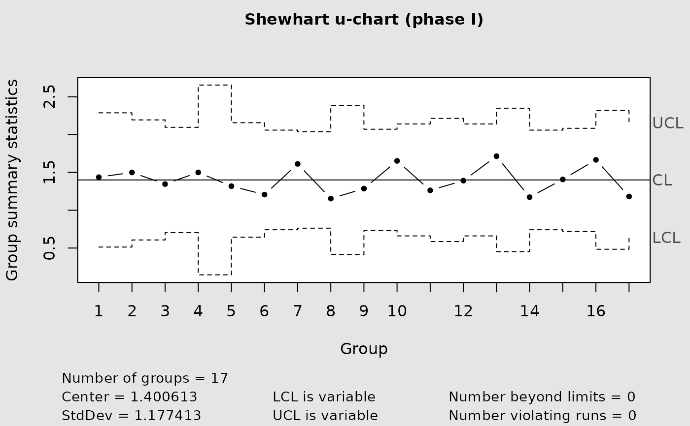
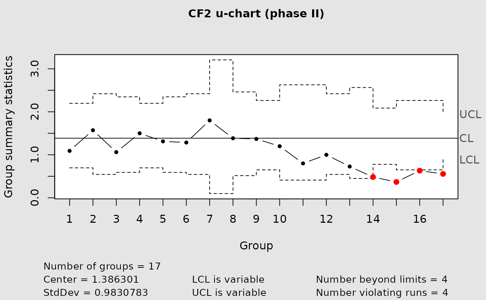
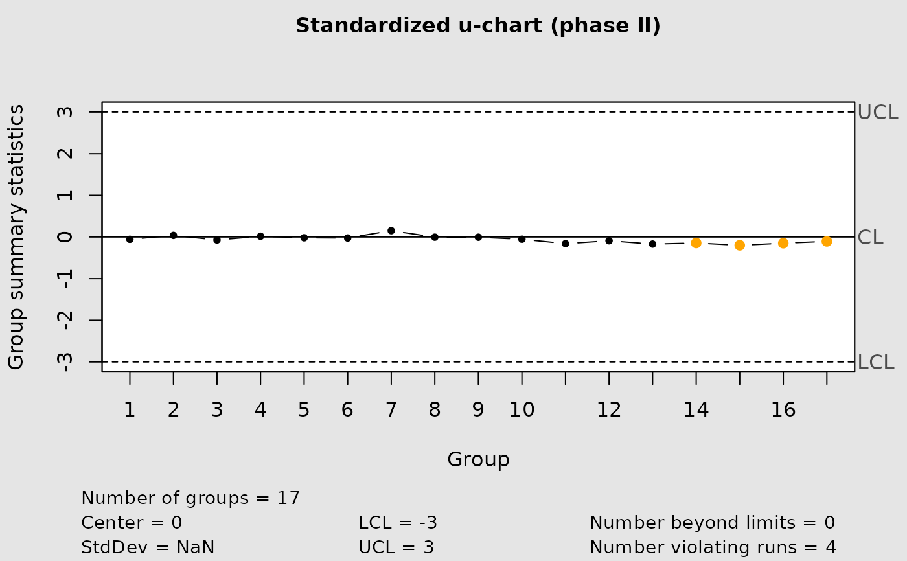

Build normal, Cornish-Fisher corrected, or standardized u charts.
Usage
cchart.u(x1 = NULL, n1 = NULL, type = "norm", u1 = NULL,
x2 = NULL, n2 = NULL, lambda = NULL, u2 = NULL,
alpha = ALPHA)Arguments
- x1
Phase I defect counts.
- n1
Phase I inspection size or vector of sizes.
- type
Chart type:
"normal","cf1","cf2", or"standardized". Legacy aliases"norm","CF", and"std"remain supported;"CF"maps to"cf2".- u1
Phase I rates, used instead of
x1.- x2
Phase II defect counts.
- n2
Phase II inspection size or vector of sizes.
- lambda
Known or estimated in-control defect rate.
- u2
Phase II rates, used instead of
x2.- alpha
Nominal two-sided false-alarm probability.
Details
For Phase I, supply n1 and exactly one of x1 or u1. For Phase II, supply n2 and exactly one of x2 or u2, together with Phase I information or a known lambda. When inspection sizes vary, the in-control rate is estimated by the pooled Poisson estimator \(sum(x_i)/sum(n_i)\).
Examples
data(moonroof)
cchart.u(x1 = moonroof$yi[1:17], n1 = moonroof$ni[1:17])

cchart.u(x1 = moonroof$yi[1:17], n1 = moonroof$ni[1:17], type = "CF", x2 = moonroof$yi[18:34], n2 = moonroof$ni[18:34])

cchart.u(type = "std", u2 = moonroof$ui[18:34], n2 = moonroof$ni[18:34], lambda = 1.4)
